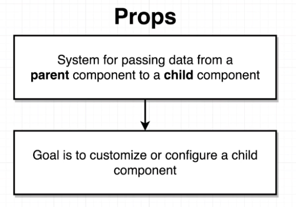
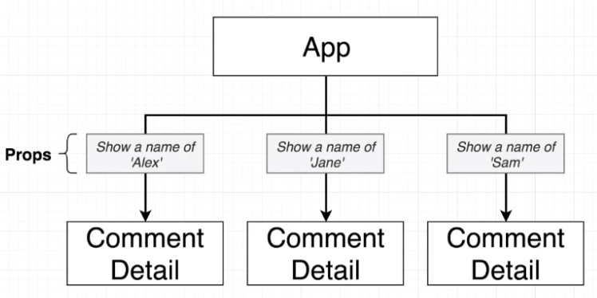

The App is the Parent Component.
The imported Components are Child Components.
Props stands for properties.
The ultimate goal is to customize the child. To make the content different, or change the behavior when the user interacts with it.
The App passes in configuration data into each component.
The first part is the component name to be passed.
Create a property name.
Then the value. This could be referenced as a variable within curly braces.
After the values are passed, you must open the Component to consume the information.
Every function receives a first argument of (props).
This Prop will show up as an Object that is provided from the 1st argument to the function which is (props).
import React from "react";
import faker from "faker";
const CommentDetail = (props) => {
console.log(props)
return (
<div className="comment">
<a href="/" className="avatar">
<img alt="avatar" src={faker.image.image()} />
</a>
<div className="content">
<a href="/" className="author">
{props.author}
</a>
<div className="metadata">
<span className="date">Today at 6:00PM</span>
</div>
<div className="text">Nice blog post!</div>
</div>
</div>
);
};
export default CommentDetail;
For example, if you console.log(props) just after the const App = () => {, you'll see Objects from the Prop.
This means you can consume it within your component like this: {props.author}